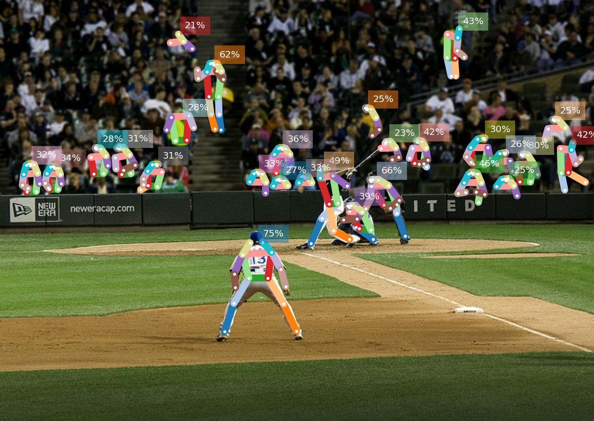
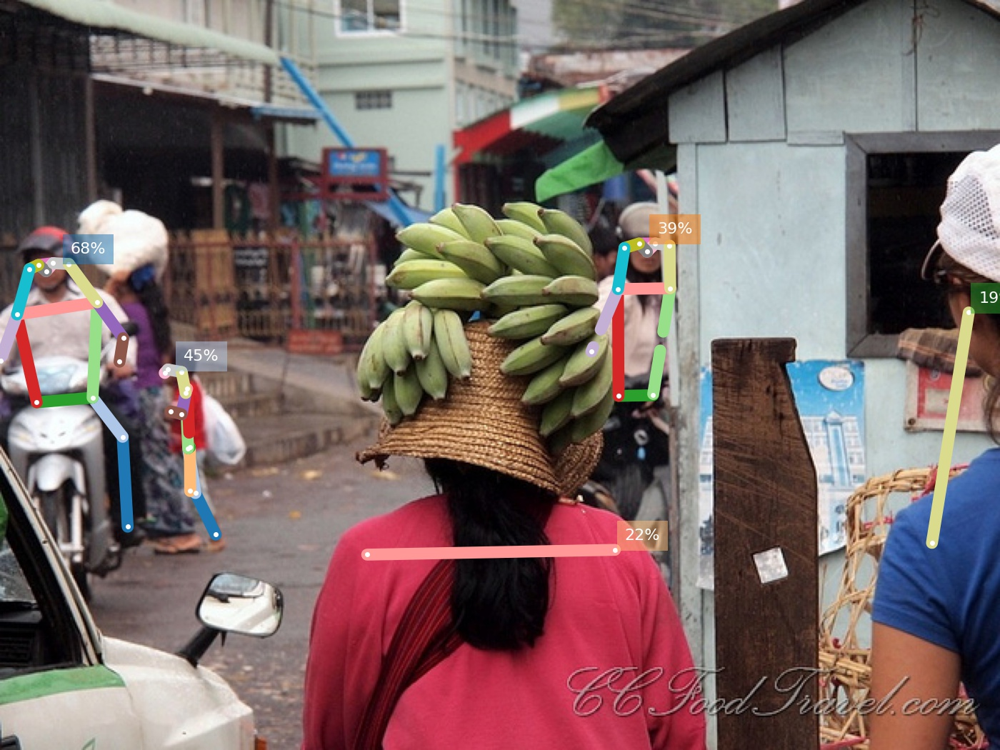
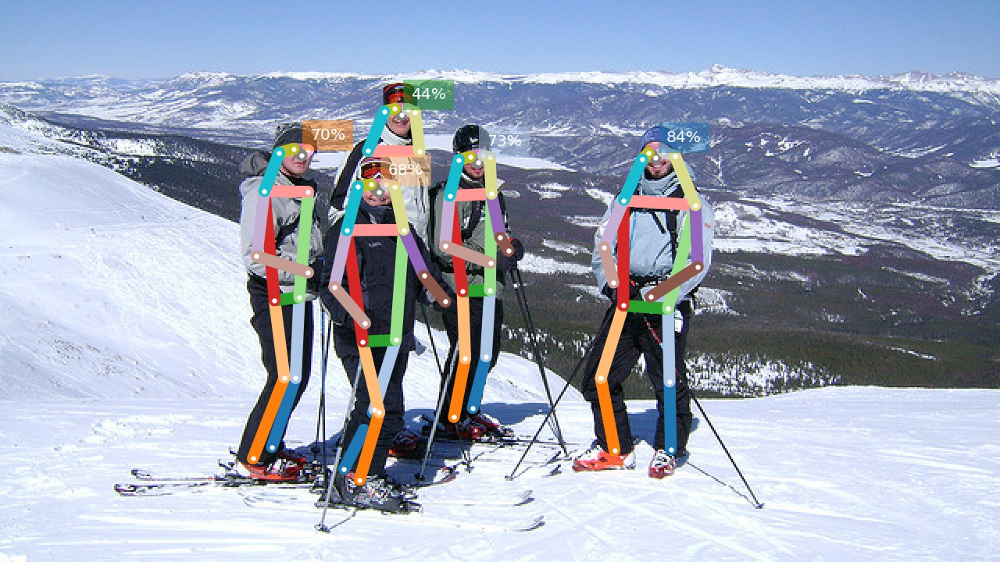
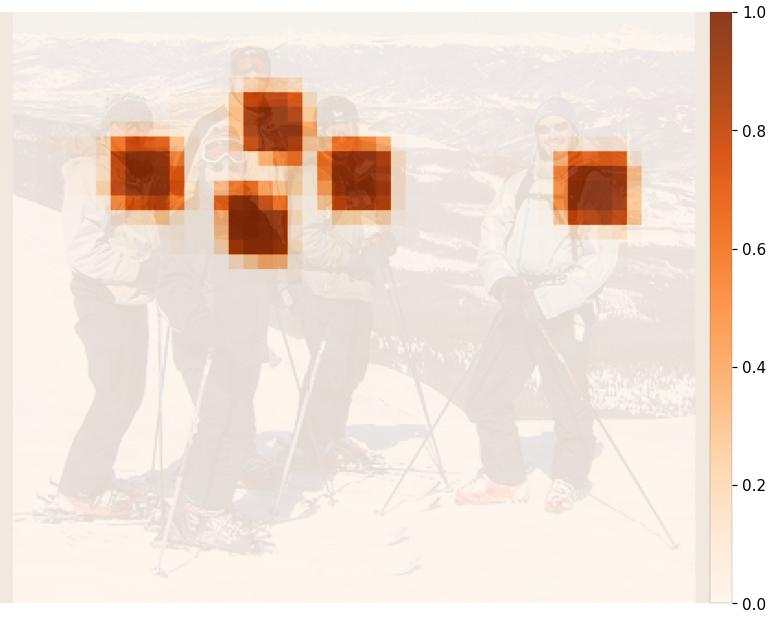
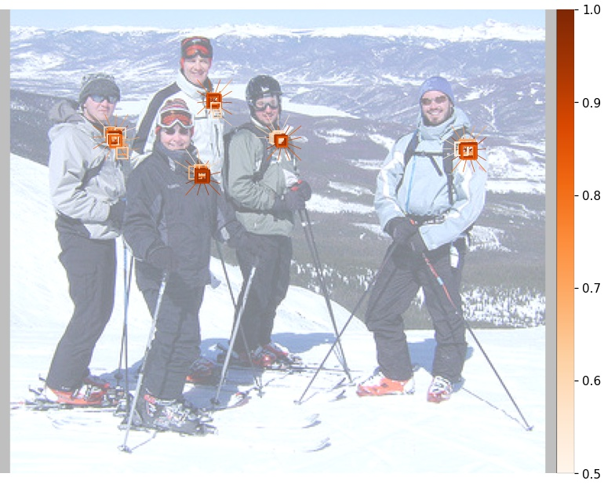
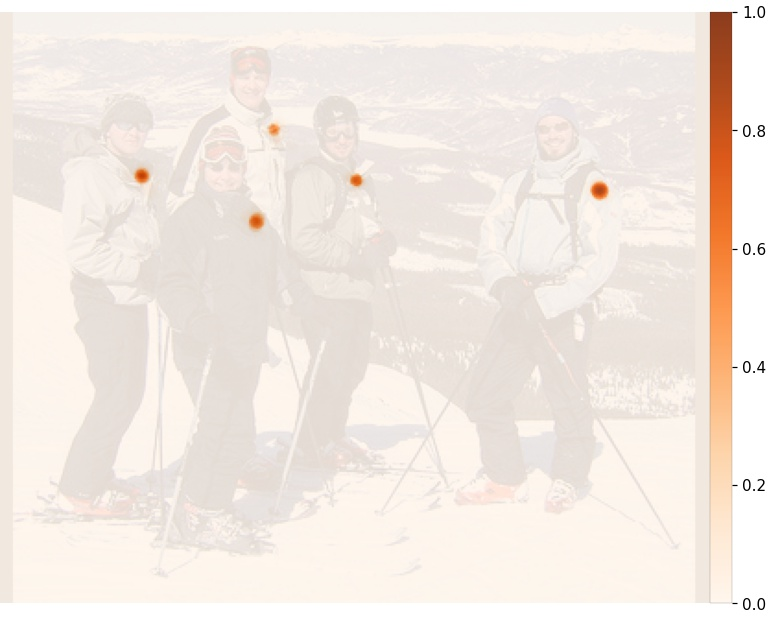
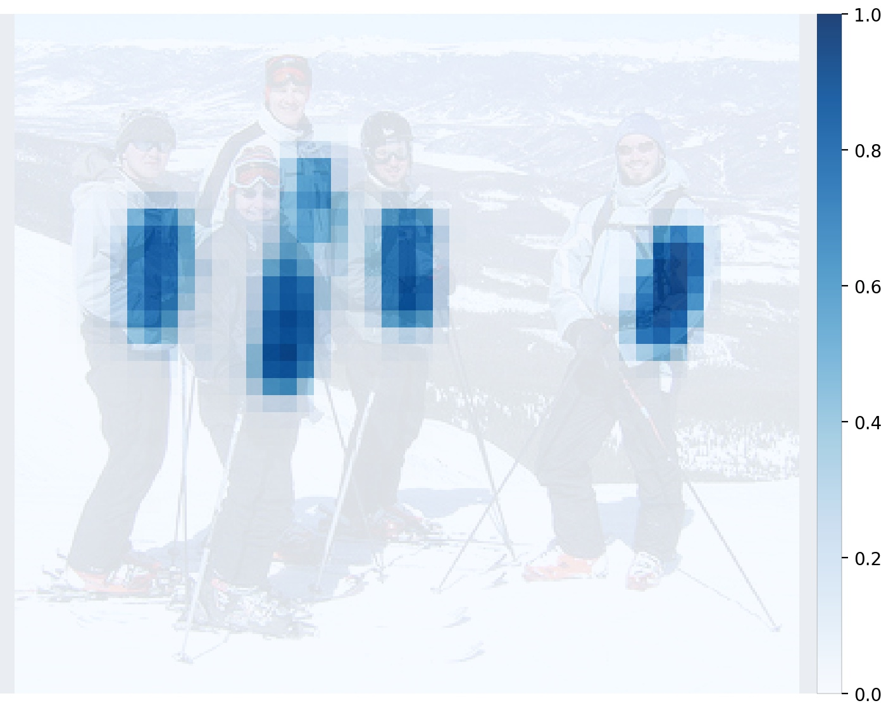

Examples¶
Below are examples of predictions with OpenPifPaf’s command line tool openpifpaf.predict. These examples can serve as a starting point to create pose predictions on your own images.
COCO¶
Below are example predictions from the COCO val set. These are the first images with more than five person annotations that were shared with CC-BY-2.0. These examples are not cherry-picked.
All examples are predicted with the fast model shufflenetv2k16.
For more accurate results, try --checkpoint=shufflenetv2k30.
%%bash
python -m openpifpaf.predict coco/000000188465.jpg --image-output --long-edge=1025
INFO:__main__:neural network device: cpu (CUDA available: False, count: 0)
INFO:openpifpaf.predictor:neural network device: cpu (CUDA available: False, count: 0)
INFO:openpifpaf.decoder.cifcaf:32 annotations: [14, 14, 17, 11, 12, 9, 9, 12, 12, 11, 12, 7, 8, 12, 11, 11, 11, 10, 9, 6, 8, 7, 7, 7, 7, 8, 7, 5, 6, 7, 4, 4]
INFO:openpifpaf.predictor:batch 0: coco/000000188465.jpg
import IPython
IPython.display.Image('coco/000000188465.jpg.predictions.jpeg')

Image credit: Photo by Brian Jelonek shared under CC-BY-2.0.
%%bash
python -m openpifpaf.predict coco/000000114907.jpg --image-output
INFO:__main__:neural network device: cpu (CUDA available: False, count: 0)
INFO:openpifpaf.predictor:neural network device: cpu (CUDA available: False, count: 0)
INFO:openpifpaf.decoder.cifcaf:12 annotations: [14, 9, 4, 4, 4, 4, 5, 4, 4, 4, 3, 2]
INFO:openpifpaf.predictor:batch 0: coco/000000114907.jpg
IPython.display.Image('coco/000000114907.jpg.predictions.jpeg')

Image credit: Photo by Fort Rucker shared under CC-BY-2.0.
%%bash
python -m openpifpaf.predict coco/000000147740.jpg --image-output
INFO:__main__:neural network device: cpu (CUDA available: False, count: 0)
INFO:openpifpaf.predictor:neural network device: cpu (CUDA available: False, count: 0)
INFO:openpifpaf.decoder.cifcaf:5 annotations: [14, 12, 10, 2, 2]
INFO:openpifpaf.predictor:batch 0: coco/000000147740.jpg
IPython.display.Image('coco/000000147740.jpg.predictions.jpeg')

Image credit: Photo by CCFoodTravel.com shared under CC-BY-2.0.
%%bash
python -m openpifpaf.predict coco/000000541055.jpg --image-output
INFO:__main__:neural network device: cpu (CUDA available: False, count: 0)
INFO:openpifpaf.predictor:neural network device: cpu (CUDA available: False, count: 0)
INFO:openpifpaf.decoder.cifcaf:5 annotations: [17, 17, 14, 17, 7]
INFO:openpifpaf.predictor:batch 0: coco/000000541055.jpg
IPython.display.Image('coco/000000541055.jpg.predictions.jpeg')

Debug Outputs¶
%%bash
python -m openpifpaf.predict coco/000000541055_cropped.jpeg --image-output --debug-indices cif:5 cifhr:5 caf:5 --save-all=coco_debug_example
INFO:__main__:neural network device: cpu (CUDA available: False, count: 0)
INFO:openpifpaf.predictor:neural network device: cpu (CUDA available: False, count: 0)
INFO:openpifpaf.decoder.cifcaf:5 annotations: [17, 17, 14, 17, 7]
INFO:openpifpaf.predictor:batch 0: coco/000000541055_cropped.jpeg
IPython.display.Image('coco_debug_example/0001.jpeg') # cif:5:confidence

IPython.display.Image('coco_debug_example/0002.jpeg') # cif:5:regression

IPython.display.Image('coco_debug_example/0005.jpeg') # cifhr:5

IPython.display.Image('coco_debug_example/0003.jpeg') # caf:5:confidence

IPython.display.Image('coco_debug_example/0004.jpeg') # caf:5:regression